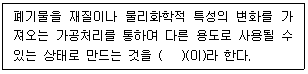
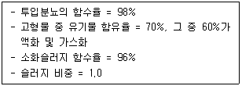
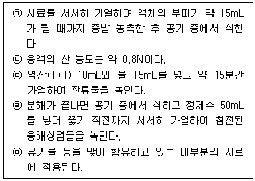
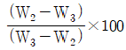
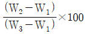
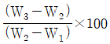
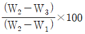
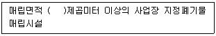
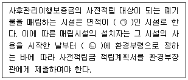
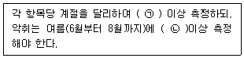

폐기물처리기사 (2022-03-05 기출문제)
1과목: 폐기물 개론
1. 폐기물에 관한 설명으로 ( )에 가장 적절한 개념은?

- 재활용(Recycling)
- 재사용(Reuse)
- 재이용(Reutilization)
- 재회수(Recovery)
(정답률: 72%)

2. 물렁거리는 가벼운 물질로부터 딱딱한 물질을 선별하는데 사용하는 선별분류법으로 경사진 컨베이어를 통해 폐기물을 주입시켜 천천히 회전하는 드럼 위에 떨어뜨려서 분류하는 것은?
- Jigs
- Table
- Secators
- Stoners
(정답률: 71%)
3. 국내에서 발생되는 사업장폐기물 및 지정폐기물의 특성에 대한 설명으로 가장 거리가 먼 것은?
- 사업장폐기물 중 가장 높은 증가율을 보이는 것은 폐유이다.
- 지정폐기물은 사업장폐기물의 한 종류이다.
- 일반사업장폐기물 중 무기물류가 가장 많은 비중을 차지하고 있다.
- 지정폐기물 중 그 배출량이 가장 많은 것은 폐산·폐알칼리이다.
(정답률: 50%)
4. 인력선별에 관한 설명으로 옳지 않은 것은?
- 사람의 손을 통한 수동 선별이다.
- 콘베이어 벨트의 한쪽 또는 양쪽에서 사람이 서서 선별한다.
- 기계적인 선별보다 작업량이 떨어질 수 있다.
- 선별의 정확도가 낮고 폭발가능 물질 분류가 어렵다.
(정답률: 79%)
5. 쓰레기의 양이 2000m3이며, 밀도는 0.95ton/m3이다. 적재용량 20ton의 트럭이 있다면 운반하는데 몇 대의 트럭이 필요한가?
- 48대
- 50대
- 95대
- 100대
(정답률: 58%)
6. 함수율 95%의 슬러지를 함수율 80%인 슬러지로 만들려면 슬러지 1ton당 증발시켜야 하는 수분의 양(kg)은? (단, 비중은 1.0기준)
- 750
- 650
- 550
- 450
(정답률: 48%)
7. 분뇨를 혐기성 소화공법으로 처리할 때 발생하는 CH4가스의 부피는 분뇨투입량의 약 8배라고 한다. 분뇨를 500kL/day씩 처리하는 소화시설에서 발생하는 CH4가스를 24시간 균등연소 시킬 때 시간당 발열량(kcal/hr)은? (단, CH4 가스의 발열량 = 약 5500 kcal/m3)
- 9.2 × 105
- 5.5 × 106
- 2.5 × 107
- 1.5 × 108
(정답률: 38%)
8. 폐기물의 밀도가 0.45ton/m3인 것을 압축기로 압축하여 0.75ton/m3로 하였을 때 부피감소율(%)은?
- 36
- 40
- 44
- 48
(정답률: 62%)
9. 쓰레기 수거노선 설정에 대한 설명으로 가장 먼 것은?
- 출발점은 차고와 가까운 곳으로 한다.
- 언덕지역의 경우 내려가면서 수거한다.
- 발생량이 많은 곳은 하루 중 가장 나중에 수거한다.
- 될 수 있는 한 시계방향으로 수거한다.
(정답률: 66%)
10. 생활폐기물 중 포장폐기물 감량화에 대한 설명으로 옳은 것은?
- 포장지의 무료 제공
- 상품의 포장공간 비율 감소화
- 백화점 자체 봉투 사용 장려
- 백화점에서 구매직후 상품 겉포장 벗기는 행위 금지
(정답률: 74%)
11. 폐기물의 운송기술에 대한 설명으로 틀린 것은?
- 파이프라인 수송은 폐기물의 발생 빈도가 높은 곳에서는 현실성이 있다.
- 모노레일 수송은 가설이 곤란하고 설치비가 고가이다.
- 컨베이어 수송은 넓은 지역에서 사용되고 사용 후 세정에 많은 물을 사용해야 한다.
- 파이프라인 수송은 장거리 이송이 곤란하고 투입구를 이용한 범죄나 사고의 위험이 있다.
(정답률: 57%)
12. 폐기물 연소 시 저위발열량과 고위발열량의 차이를 결정짓는 물질은?
- 물
- 탄소
- 소각재의 양
- 유기물 총량
(정답률: 55%)
13. 적환장을 이용한 수집, 수송에 관한 설명으로 가장 거리가 먼 것은?
- 소형의 차량으로 폐기물을 수거하여 대형차량에 적환 후 수송하는 시스템이다.
- 처리장이 원거리에 위치할 경우에 적환장을 설치한다.
- 적환장은 수송차량에 싣는 방법에 따라서 직접투하식, 간접투하식으로 구별된다.
- 적환장 설치장소는 쓰레기 발생 지역의 무게 중심에 되도록 가까운 곳이 알맞다.
(정답률: 60%)
14. 발열량에 대한 설명으로 옳지 않은 것은?
- 우리나라 소각로의 설계 시 이용하는 열량은 저위발열량이다.
- 수분을 50% 이상 함유하는 쓰레기는 삼성분조성비를 바탕으로 발열량을 측정하여야 오차가 적다.
- 폐기물의 가연분, 수분, 회분의 조성비로 저위발열량을 추정할 수 있다.
- Dulong 공식에 의한 발열량 계산은 화학적 원소분석을 기초로 한다.
(정답률: 55%)
15. 쓰레기 발생량 조사방법이 아닌 것은?
- 적재차량 계수분석법
- 직접 계근법
- 물질수지법
- 경향법
(정답률: 61%)
16. 폐기물 수거방법 중 수거효율이 가장 높은 방법은?
- 대형쓰레기통 수거
- 문전식 수거
- 타종식 수거
- 적환식 수거
(정답률: 52%)
17. 폐기물 발생량 조사방법에 관한 설명으로 틀린 것은?
- 물질수지법은 일반적인 생활폐기물 발생량을 추산할 때 주로 이용한다.
- 적재차량 계수분석법은 일정기간 동안 특정지역의 폐기물 수거, 운반차량의 대수를 조사하여, 이 결과에 밀도를 이용하여 질량으로 환산하는 방법이다.
- 직접계근법은 비교적 정확한 폐기물 발생량을 파악할 수 있다.
- 직접계근법은 적재차량 계수 분석에 비하여 작업량이 많고 번거롭다는 단점이 있다.
(정답률: 59%)
18. 퇴비화 과정의 초기단계에서 나타나는 미생물은?
- Bacillus sp.
- Streptomyces sp.
- Aspergillus fumigatus
- Fungi
(정답률: 64%)
19. 폐기물의 운송을 돕기 위하여 압축할 때, 부피감소율(Volume reduction)이 45%이었다. 압축비(Compaction ratio)는?
- 1.42
- 1.82
- 2.32
- 2.62
(정답률: 54%)
20. 도시쓰레기 중 비가연성 부분이 중량비로 약 40% 차지하였다. 밀도가 350kg/m3인 쓰레기 8m3가 있을 때 가연성 물질의 양(ton)은?
- 2.8
- 1.92
- 1.68
- 1.12
(정답률: 40%)
2과목: 폐기물 처리 기술
21. 폐기물을 수평으로 고르게 깔고 압축하면서 폐기물 층과 복토 층을 교대로 쌓는 공법은?
- Cell 공법
- 압축매립 공법
- 샌드위치 공법
- 도량형 매립 공법
(정답률: 48%)
22. 호기성 퇴비화 4단계에 따른 온도변화로 가장 알맞은 것은?
- 고온단계 – 중온단계 – 냉각단계 - 숙성단계
- 중온단계 – 고온단계 – 냉각단계 - 숙성단계
- 냉각단계 – 중온단계 – 고온단계 - 숙성단계
- 숙성단계 – 냉각단계 – 중온단계 - 고온단계
(정답률: 46%)
23. 유해폐기물의 고형화 처리 중 무기적 고형화에 비하여 유기적 고형화의 특징에 대한 설명으로 틀린 것은?
- 수밀성이 크며, 처리비용이 고가이다.
- 미생물, 자외선에 대한 안정성이 강하다.
- 방사성 폐기물처리에 많이 적용한다.
- 최종 고화체의 체적 증가가 다양하다.
(정답률: 44%)
24. 유해폐기물을 고화처리하는 방법 중 유기중합체법에 대한 설명이다. 단점으로 옳지 않은 것은?
- 고형성분만 처리 가능하다.
- 최종처리 시 2차용기에 넣어 매립하여야 한다.
- 중합에 사용되는 촉매 중 부식성이 있고, 특별한 혼합장치와 용기라이너가 필요하다.
- 혼합률(MR)이 높고 고온 공정이다.
(정답률: 41%)
25. 지하수 중 에틸벤젠을 탈기(Air stripping) 충전탑으로 제거하고자 한다. 지하수량(Qw) 5L/sec, 공기 공급량(Qa) 100L/sec일 때, 에틸벤젠의 무차원 헨리상수 값이 0.3 이라면 탈기계수(Stripping factor) 값은?
- 20
- 10
- 6
- 3
(정답률: 40%)
26. SRF 소각로에서 사용 시 문제점에 관한 설명으로 가장 거리가 먼 것은?
- 시설비가 고가이고, 숙련된 기술이 필요하다.
- 연료공급의 신뢰성 문제가 있을 수 있다.
- Cl 함량 및 연소먼지 문제는 거의 없지만, 유황함량이 많아 SOx 발생이 상대적으로 많은 편이다.
- Cl 함량이 높을 경우 소각시설의 부식발생으로 수명단축의 우려가 있다.
(정답률: 48%)
27. 유기오염물질의 지하이동 모델링에 포함되는 주요 인자가 아닌 것은?
- 유기오염물질의 분배계수
- 토양의 수리전도도
- 생물학적 분해속도
- 토양 pH
(정답률: 48%)
28. 매립가스를 유용하게 활용하기 위해 CH4와 CO2를 분리하여야 한다. 다음 중 분리방법으로 적합하지 않은 것은?
- 물리적 흡착에 의한 분리
- 막분리에 의한 분리
- 화학적 흡착에 의한 분리
- 생물학적 분해에 의한 분리
(정답률: 34%)
29. 함수율 95%인 슬러지를 함수율 70%의 탈수 cake로 만들었을 경우의 무게비(탈수 후/탈수 전)는? (단, 비중 1.0, 분리액과 함께 유출된 슬러지량은 무시)
- 1/4
- 1/5
- 1/6
- 1/7
(정답률: 30%)
30. 위생매립방법에 대한 설명으로 가장 거리가 먼 것은?
- 도랑식 매립법은 도랑을 약 2.5 ~ 7m 정도의 깊이로 파고 폐기물을 묻은 후에 다지고 흙을 덮은 방법이다.
- 평지 매립법은 매립의 가장 보편적인 형태로 폐기물을 다진 후에 흙을 덮는 방법이다.
- 경사식 매립법은 어느 경사면에 폐기물을 쌓은 후에 다지고 그 위에 흙을 덮는 방법이다.
- 도랑식 매립법은 매립 후 흙이 부족하며 지면이 높아진다.
(정답률: 48%)
31. 매립구조에 따라 분류하였을 때 매립종료 1년 후 침출수의 BOD가 가장 낮게 유지되는 매립방법은? (단, 매립조건, 환경 등은 모두 같다고 가정함)
- 혐기성 위생매립
- 개량형 혐기성 위생매립
- 준호기성 매립
- 호기성 매립
(정답률: 34%)
32. 생활폐기물 자원화를 위한 처리시설 중 선별시설의 설치지침이 틀린 것은?
- 선별라인은 반입형태, 반입량, 작업효율 등을 고려하여 계열화할 수 있다.
- 입도선별, 비중선별, 금속선별 등 필요에 따라 적정하게 조합하여 설치하되, 고형연료의 품질제고를 위하여 PVC 등을 선별할 수 있다.
- 선별된 물질이 후속공정에 연속적으로 이송될 수 있도록 저류시설을 설치하여야 한다.
- 선별시설은 계절적 변화 등에 관계없이 고형연료제품 제조시 목표품질을 달성할 수 있는 적합한 선별시설을 계획하여야 한다.
(정답률: 38%)
33. 폐기물 매립으로 인하여 발생될 수 있는 피해내용에 대한 설명으로 틀린 것은?
- 육상 매립으로 인한 유역의 변화로 우수의 수로가 영향을 받기 쉽다.
- 매립지에서 대량 발생되는 파리의 방제에 살충제를 사용하면 점차 저항성이 생겨 약제를 변경해야 한다.
- 쓰레기의 호기성분해로 생긴 메탄가스 등에 자연 착화하기 쉽다.
- 쓰레기 부패로 악취가 발생하여 주변지역에 악영향을 준다.
(정답률: 52%)
34. 차수설비의 기능과 관계가 없는 사항은?
- 매립지 내의 오수 및 주변지하수의 유입 방지
- 매립지 주위의 배수공에 의해 우수 및 지하수 유입 방지
- 우수로 인해 매립지 내의 바닥 이하로의 침수 방지
- 배수공에 의해 침출수 집수 및 매립지 밖으로의 배수
(정답률: 42%)
35. 폐기물을 매립 시 덮개 흙으로 덮어야 하는 이유로 가장 거리가 먼 것은?
- 쥐나 파리의 서식처를 없애기 위해
- CO2 가스가 외부로 나가는 것을 방지하기 위해
- 폐기물이 바람에 의해 날리는 것을 방지하기 위해
- 미관상 보기에 좋지 않아서
(정답률: 45%)
36. 음식물쓰레기 처리방법으로 가장 부적합한 방법은?
- 매립
- 바이오가스 생산처리
- 퇴비화
- 사료화
(정답률: 55%)
37. 슬러지를 건조하여 농토로 사용하기 위하여 여과기로 원래 슬러지의 함수율을 40%로 낮추고자 한다. 여과속도가 10 kg/m2·hr(건조고형물 기준), 여과면적 10m2의 조건에서 시간당 탈수 슬러지 발생량은(kg/hr)?
- 약 186
- 약 167
- 약 154
- 약 143
(정답률: 48%)
38. 1일 처리량이 100kL인 분뇨처리장에서 분뇨를 중온소화방식으로 처리하고자 한다. 소화 후 슬러지량(m3/day)은?

- 15
- 29
- 44
- 53
(정답률: 43%)
39. 용매추출처리에 이용 가능성이 높은 유해폐기물과 가장 거리가 먼 것은?
- 미생물에 의해 분해가 힘든 물질
- 활성탄을 이용하기에는 농도가 너무 높은 물질
- 낮은 휘발성으로 인해 스트리핑하기가 곤란한 물질
- 물에 대한 용해도가 높아 회수성이 낮은 물질
(정답률: 54%)
40. BOD가 15000 mg/L, Cl-이 800ppm인 분뇨를 희석하여 활성슬러지법으로 처리한 결과 BOD가 45mg/L, Cl-이 40ppm이었다면 활성슬러지법의 처리효율(%)은? (단, 희석수 중에 BOD, Cl-은 없음)
- 92
- 94
- 96
- 98
(정답률: 30%)
3과목: 폐기물 소각 및 열회수
41. 소각로 설계에서 중요하게 활용되고 있는 발열량을 추정하는 방법에 대한 설명으로 옳지 않은 것은?
- 폐기물의 입자분포에 의한 방법
- 단열열량계에 의한 방법
- 물리적조성에 의한 방법
- 원소분석에 의한 방법
(정답률: 50%)
42. 폐기물 처리시설 내 소요전력을 생산하는데 가장 많이 사용하는 터어빈은?
- 충동 터어빈
- 배압 터어빈
- 반동 터어빈
- 복수 터어빈
(정답률: 36%)
43. 고체연료의 중량조성비가 다음과 같다면 이 연료의 저위발열량(kcal/kg)은? (단, C = 78%, H = 6%, O = 4%, S = 1%, 수분 = 5%, Dulong식 적용)
- 7259
- 7459
- 7659
- 7859
(정답률: 39%)
44. 액체주입형 연소기에 관한 설명으로 틀린 것은?
- 구동장치가 없어서 고장이 적다.
- 대기오염 방지시설과 소각재의 처리설비가 필요하다.
- 연소기의 가장 일반적인 형식은 수평 점화식이다.
- 버너 노즐을 통하여 액체를 미립화 하여야 하며 대량처리가 어렵다.
(정답률: 40%)
45. 기체연료 중 천연가스(LNG)의 주성분은?
- H2
- CO
- CO2
- CH4
(정답률: 61%)
46. 폐기물의 자원화 기술 용어가 아닌 것은?
- Landfill
- Composting
- Gasification & Pyrolysis
- SRF
(정답률: 46%)
47. 다음 설명에서 맞지 않는 것은?
- 1kcal은 표준기압에서 순수한 물 1kg를 1℃(14.5 ~ 15.5℃) 올리는데 필요한 열량이다.
- 단위질량의 물질을 1℃ 상승하는데 필요한 열량은 비열이다.
- 포화 증기온도 이상으로 가열한 증기를 과열증기라 한다.
- 고체에서 기체가 될 때에 취하는 열을 증발열이라 한다.
(정답률: 43%)
48. 유동상식 소각로의 장·단점에 대한 설명으로 틀린 것은?
- 반응시간이 빨라 소각시간이 짧다. (로 부하율이 높다.)
- 연소효율이 높아 미연소분 배출이 적고 2차 연소실이 불필요하다.
- 기계적 구동부분이 많아 고장율이 높다.
- 상(床)으로부터 찌꺼기의 분리가 어려우며 운전비 특히 동력비가 높다.
(정답률: 46%)
49. 소각조건의 3T에 해당하는 것은?
- 온도, 연소량, 혼합
- 온도, 연소량, 압력
- 온도, 압력, 혼합
- 온도, 연소시간, 혼합
(정답률: 56%)
50. 회전식(rotary) 소각로에 대한 설명으로 옳지 않은 것은?
- 일반적으로 열효율이 상대적으로 높다.
- 킬른은 1600℃에 달하는 온도에서도 작동될 수 있다.
- 높은 설치비와 보수비가 요구된다.
- 다양한 액상 및 고형폐기물을 독립적으로 조합하지 않고서도 소각시킬 수 있다.
(정답률: 25%)
51. 소각로의 쓰레기 이동방식에 따라 구분한 화격자 종류 중 화격자를 무한궤도식으로 설치한 구조로 되어 있고, 건조, 연소, 후연소의 각 스토커 사이에 높이 차이를 두어 낙하시킴으로써 쓰레기층을 뒤집으며 내구성이 좋은 구조로 되어 있는 것은?
- 낙하식 스토커
- 역동식 스토커
- 계단식 스토커
- 이상식 스토커
(정답률: 25%)
52. 소각로의 연소효율을 증대시키는 방법으로 가장 거리가 먼 것은?
- 적절한 연소시간 유지
- 적절한 온도 유지
- 적절한 공기공급과 연료비 설정
- 층류상태 유지
(정답률: 60%)
53. 폐기물 50 ton/day를 소각로에서 1일 24시간 연속가동하여 소각처리할 때 화상면적(m2)은? (단, 화상부하 = 150kg/m2·hr)
- 약 14
- 약 18
- 약 22
- 약 26
(정답률: 35%)
54. 쓰레기 투입방식에 따라 소각로를 분류할 수 있다. 해당되지 않는 것은?
- 상부투입방식
- 중간투입방식
- 하부투입방식
- 십자투입방식
(정답률: 43%)
55. 폐기물 소각설비의 주요 공정 중 폐기물 반입 및 공급설비에 해당되지 않는 것은?
- 폐열보일러
- 폐기물 계량장치
- 폐기물 투입문
- 폐기물 크레인
(정답률: 38%)
56. 소각로에서 쓰레기의 소각과 동시에 배출되는 가스성분을 분석한 결과, N2 = 82%, O2 = 5% 였을 때 소각로의 공기과잉계수(m)는? (단, 완전연소라고 가정)
- 1.3
- 2.3
- 2.8
- 3.5
(정답률: 34%)
57. 구성성분이 O 20%, H 6%, C 30%, 회분 14%, 수분 30%인 폐기물을 소각했을 때 고위발열량(kcal/kg)은? (단, Dulong식 기준)
- 약 2420
- 약 2700
- 약 3130
- 약 3620
(정답률: 37%)
58. 열효율이 65%인 유동층 소각로에서 15℃의 슬러지 2톤을 소각시켰다. 배기온도가 400℃라면 연소온도(℃)는? (단, 열효율은 배기온도만을 고려한다.)
- 955
- 988
- 1015
- 1115
(정답률: 20%)
59. 폐기물의 소각처리 시 여분의 공기(excess air)는 이론적인 산화에 필요한 양에 최소 몇 % 정도 더 넣어주어야 하는가?
- 5
- 10
- 20
- 60
(정답률: 23%)
60. 중유 보일러의 경우 적정공기비(m = 1.1 ~ 1.3)일 때, CO2 농도의 범위(%)는?
- 10 ~ 8%
- 12 ~ 10%
- 16 ~ 12%
- 20 ~ 16%
(정답률: 30%)
4과목: 폐기물 공정시험기준(방법)
61. 유도결합플라스마-원자발광분광법을 사용한 금속류 측정에 관한 내용으로 틀린 것은?
- 대부분의 간섭물질은 산 분해에 의해 제거된다.
- 유도결합플라스마-원자발광분광기는 시료도입부, 고주파전원부, 광원부, 분광부, 연산처리부 및 기록부로 구성된다.
- 시료 중에 칼슘과 마그네슘의 농도가 높고 측정값이 규제값의 90% 이상일 때는 희석 측정하여야 한다.
- 유도결합플라스마-원자발광분광기의 분광부는 검출 및 측정에 따라 연속주사형 단원소측정장치와 다원소동시 측정장치로 구분된다.
(정답률: 32%)
62. 자외선/가시선 분광법에 의하여 폐기물 내 크롬을 분석하기 위한 실험방법에 관한 설명으로 옳은 것은?
- 발색 시 수산화나트륨의 최적 농도는 0.5N이다. 만일 수산화나트륨의 양이 부족하면 5mL을 넣어 시험한다.
- 시료 중에 철이 5mg 이상으로 공존할 경우에는 다이페닐카바자이드 용액을 넣기 전에 10% 피로인산나트륨·10수화물 용액 5mL를 넣는다.
- 적자색의 착화합물을 흡광도 540nm에서 측정한다.
- 총 크롬을 과망간산나트륨을 사용하여 6가 크롬으로 산화시킨 다음 알칼리성에서 다이페닐카바자이드와 반응시킨다.
(정답률: 29%)
63. 시료의 전처리방법 중 질산-황산에 의한 유기물분해에 해당되는 항목들로 짝지어진 것은?

- ㉡, ㉢, ㉣
- ㉢, ㉣, ㉤
- ㉠, ㉣, ㉤
- ㉠, ㉢, ㉤
(정답률: 40%)
64. 폐기물 중의 유기물 함량(%)을 식으로 나타낸 것은? (단, W1 = 도가니 또는 접시의 무게, W2 = 강열 전의 도가니 또는 접시와 시료의 무게, W3 = 강열 후의 도가니 또는 접시와 시료의 무게)




(정답률: 48%)
65. 기체크로마토그래피법에 대한 설명으로 옳지 않은 것은?
- 일정 유량으로 유지되는 운반가스는 시료도입부로부터 분리관내를 흘러서 검출기를 통하여 외부로 방출된다.
- 할로겐 화합물을 다량 함유하는 경우에는 분자 흡수나 광산란에 의하여 오차가 발생하므로 추출법으로 분리하여 실험한다.
- 유기인 분석 시 추출 용매 안에 함유하고 있는 불순물이 분석을 방해할 수 있으므로 바탕시료나 시약바탕시료를 분석하여 확인할 수 있다.
- 장치의 기본구성은 압력조절밸브, 유량조절기, 압력계, 유량계, 시료도입부, 분리관, 검출기 등으로 되어 있다.
(정답률: 48%)
66. 5톤 이상의 차량에서 적재폐기물의 시료를 채취할 때 평면상에서 몇 등분하여 채취하는가?
- 3등분
- 5등분
- 6등분
- 9등분
(정답률: 50%)
67. 이온전극법을 적용하여 분석하는 항목은? (단, 폐기물공정시험기준에 의함)
- 시안
- 수은
- 유기인
- 비소
(정답률: 55%)
68. 유도결합 플라즈마 발광광도법(ICP)에 대한 설명 중 틀린 것은?
- 시료 중의 원소가 여기되는데 필요한 온도는 6000 ~ 8000K이다.
- ICP 분석장치에서 에어로졸 상태로 분무된 시료는 가장 안쪽의 관을 통하여 도너츠 모양의 플라즈마 중심부에 도달한다.
- 시료측정에 따른 정량분석은 검량선법, 내부표준법, 표준첨가법을 사용한다.
- 플라즈마는 그 자체가 광원으로 이용되기 때문에 매우 좁은 농도범위의 시료를 측정하는 데 주로 사용된다.
(정답률: 35%)
69. 원자흡수분광광도계 장치의 구성으로 옳은 것은?
- 광원부 – 파장선택부 – 측광부 - 시료부
- 광원부 – 시료원자화부 – 파장선택부 - 측광부
- 광원부 – 가시부 – 측광부 - 시료부
- 광원부 – 가시부 – 시료부 - 측광부
(정답률: 55%)
70. 유리전극법에 의한 수소이온농도 측정 시 간섭물질에 관한 설명으로 옳지 않은 것은?
- pH 10 이상에서 나트륨에 의한 오차가 발생할 수 있는데 이는 “낮은 나트륨 오차 전극”을 사용하여 줄일 수 있다.
- 유리전극은 일반적으로 용액의 색도, 탁도, 염도, 콜로이드성 물질들, 산화 및 환원성 물질들 등에 의해 간섭을 많이 받는다.
- 기름 층이나 작은 입자상이 전극을 피복하여 pH 측정을 방해할 경우에는 세척제로 닦아낸 후 정제수로 세척하고 부드러운 천으로 수분을 제거하여 사용한다.
- 피복물을 제거할 때는 염산(1+9)용액을 사용할 수 있다.
(정답률: 53%)
71. 2N 황산 10L를 제조하려면 3M 황산 얼마가 필요한가?
- 9.99L
- 6.66L
- 5.55L
- 3.33L
(정답률: 24%)
72. 강도 Io의 단색광이 발색 용액을 통과할 때 그 빛의 30%가 흡수되었다면 흡광도는?
- 0.155
- 0.181
- 0.216
- 0.283
(정답률: 48%)
73. 폐기물의 시료채취 방법에 관한 설명으로 가장 거리가 먼 것은?
- 시료의 채취는 일반적으로 폐기물이 생성되는 단위 공정별로 구분하여 채취하여야 한다.
- 폐기물소각시설의 연속식 연소방식 소각재 반출설비에서 채취할 때 소각재가 운반차량에 적재되어 있는 경우에는 적재 차량에서 채취하는 것을 원칙으로 한다.
- 폐기물소각시설의 연속식 연소방식 소각재 반출설비에서 채취하는 경우, 비산재 저장조에서는 부설된 크레인을 이용하여 채취한다.
- PCBs 및 휘발성 저급 염소화 탄화수소류 실험을 위한 시료의 채취 시는 무색경질의 유리병을 사용한다.
(정답률: 41%)
74. 유해특성(재활용환경성평가) 중 폭발성 시험방법에 대한 설명으로 옳지 않은 것은?
- 격렬한 연소반응이 예상되는 경우에는 시료의 양을 0.5g으로 하여 시험을 수행하며, 폭발성 폐기물로 판정될 때까지 시료의 양을 0.5g씩 점진적으로 늘려준다.
- 시험결과는 게이지 압력이 690kPa에서 2070kPa까지 상승할 때 걸리는 시간과 최대 게이지 압력 2070kPa에 도달 여부로 해석한다.
- 최대 연소속도는 산화제를 무게비율로써 10~ 90%를 포함한 혼합물질의 연소속도 중 가장 빠른 측정값을 의미한다.
- 최대 게이지 압력이 2070kPa이거나 그 이상을 나타내는 폐기물은 폭발성 폐기물로 간주하며, 점화 실패는 폭발성이 없는 것으로 간주한다.
(정답률: 53%)
75. 유기물 함량이 비교적 높지 않고 금속의 수산화물, 산화물, 인산염 및 황화물을 함유하는 시료에 적용하는 산분해법은?
- 질산 분해법
- 질산 – 황산 분해법
- 질산 – 염산 분해법
- 질산 – 과염소산 분해법
(정답률: 38%)
76. 폐기물공정시험기준에서 규정하고 있는 온도에 대한 설명으로 틀린 것은?
- 실온 1 ~ 35℃
- 온수 60 ~ 70℃
- 열수 약 100℃
- 냉수 4℃ 이하
(정답률: 50%)
77. pH 측정(유리전극법)의 내부정도관리 주기 및 목표 기준에 대한 설명으로 옳은 것은?
- 시료를 측정하기 전에 표준용액 2개 이상으로 보정한다.
- 시료를 측정하기 전에 표준용액 3개 이상으로 보정한다.
- 정도관리 목표(정도관리 항목 : 정밀도)는 ±0.01 이내이다.
- 정도관리 목표(정도관리 항목 : 정밀도)는 ±0.03 이내이다.
(정답률: 35%)
78. 폴리클로리네이티드비페닐(PCBs)의 기체크로마토그래피법 분석에 대한 설명으로 옳지 않은 것은?
- 운반기체는 부피백분율 99.999% 이상의 아세틸렌을 사용한다.
- 고순도의 시약이나 용매를 사용하여 방해물질을 최소화하여야 한다.
- 정제컬럼으로는 플로리실 컬럼과 실리카겔 컬럼을 사용한다.
- 농축장치로 구데르나다니쉬(KD) 농축기 또는 회전증발농축기를 사용한다.
(정답률: 42%)
79. '항량으로 될 때까지 건조한다'라 함은 같은 조건에서 1시간 더 건조할 때 전후 무게의 차가 g당 몇 mg 이하일 때를 말하는가?
- 0.01 mg
- 0.03 mg
- 0.1 mg
- 0.3 mg
(정답률: 41%)
80. 원자흡수분광광도법에 의한 구리(Cu) 시험방법으로 옳은 것은?
- 정량범위는 440nm에서 0.2 ~ 4mg/L 범위 정도이다.
- 정밀도는 측정값의 상대표준편차(RSD)로 산출하며 측정한 결과 ±25% 이내이어야 한다.
- 검정곡선의 결정계수(R2)는 0.999 이상이어야 한다.
- 표준편차율은 표준물질의 농도에 대한 측정 평균값의 상대 백분율로서 나타내며 5 ~ 15% 범위이다.
(정답률: 49%)
5과목: 폐기물 관계 법규
81. 의료폐기물을 배출, 수집운반, 재활용 또는 처분하는 자는 환경부령이 정하는 바에 따라 전자정보처리프로그램에 입력을 하여야 한다. 이 때 이용되는 인식방법으로 옳은 것은?
- 바코드인식방법
- 블루투스인식방법
- 유선주파수인식방법
- 무선주파수인식방법
(정답률: 42%)
82. 폐기물처리업자의 영업정지처분에 따라 당해 영업의 이용자 등에게 심한 불편을 주는 경우 과징금을 부과할 수 있도록 하고 있다. 관련 내용 중 틀린 것은?
- 환경부령이 정하는 바에 따라 그 영업의 정지에 갈음하여 3억원 이하의 과징금을 부과할 수 있다.
- 사업장의 사업규모, 사업지역의 특수성, 위반행위의 정도 및 횟수 등을 참작하여 과징금의 금액의 2분의 1 범위 안에서 가중 또는 감경할 수 있다.
- 영업의 정지를 갈음하여 대통령령으로 정하는 매출액에 100분의 5를 곱한 금액을 초과하지 아니하는 범위에서 과징금을 부과할 수 있다.
- 과징금을 납부하지 아니한 때에는 국세체납처분 또는 지방세체납처분의 예에 따라 과징금을 징수한다.
(정답률: 44%)
83. 폐기물처리시설의 설치를 마친 자가 폐기물처리시설 검사기관으로 검사를 받아야 하는 시설이 아닌 것은?
- 소각시설
- 파쇄시설
- 매립시설
- 소각열회수시설
(정답률: 46%)
84. 폐기물 처리시설의 종류 중 재활용시설(기계적 재활용 시설)의 기준으로 틀린 것은?
- 용융시설(동력 7.5kW 이상인 시설로 한정)
- 응집·침전시설(동력 7.5kW이상인 시설로 한정)
- 압축시설(동력 7.5kW 이상인 시설로 한정)
- 파쇄·분쇄시설(동력 15kW 이상인 시설로 한정)
(정답률: 57%)
85. 폐기물 관리의 기본원칙으로 틀린 것은?
- 사업자는 제품의 생산방식 등을 개선하여 폐기물의 발생을 최대한 억제해야 한다.
- 폐기물은 우선적으로 소각, 매립 등의 처분을 한다.
- 폐기물로 인하여 환경오염을 일으킨 자는 오염된 환경을 복원할 책임을 져야 한다.
- 누구든지 폐기물을 배출하는 경우에는 주변 환경이나 주민의 건강에 위해를 끼치지 아니하도록 사전에 적절한 조치를 하여야 한다.
(정답률: 52%)
86. 사업장폐기물배출자는 사업장폐기물의 종류와 발생량 등을 환경부령으로 정하는 바에 따라 신고하여야 한다. 이를 위반하여 신고를 하지 아니하거나 거짓으로 신고를 한 자에 대한 과태료 처분 기준은?
- 200만원 이하
- 300만원 이하
- 500만원 이하
- 1천만원 이하
(정답률: 39%)
87. 폐기물처리시설(중간처리시설 : 유수분리시설)에 대한 기술관리대행계약에 포함될 점검항목과 가장 거리가 먼 것은?
- 분리수이동설비의 파손 여부
- 회수유저장조의 부식 또는 파손 여부
- 분리시설 교반장치의 정상가동 여부
- 이물질제거망의 청소 여부
(정답률: 40%)
88. 사후관리항목 및 방법에 따라 조사한 결과를 토대로 매립시설이 주변환경에 미치는 영향에 대한 종합보고서를 매립시설의 사용종료신고 후 몇 년마다 작성하여야 하는가?(문제 오류로 가답안 발표시 3번으로 발표되었지만 확정답안 발표시 모두 정답처리 되었습니다. 여기서는 가답안인 3번을 누르면 정답 처리 됩니다.)
- 2년 마다
- 3년 마다
- 5년 마다
- 10년 마다
(정답률: 52%)
89. 주변지역 영향 조사대상 폐기물처리시설 기준으로 ( )에 적절한 것은?

- 330
- 3300
- 1만
- 3만
(정답률: 48%)
90. 한국폐기물협회의 수행 업무에 해당하지 않는 것은? (단, 그 밖의 정관에서 정하는 업무는 제외)
- 폐기물처리 절차 및 이행 업무
- 폐기물 관련 국제 협력
- 폐기물 관련 국제 교류
- 폐기물과 관련된 업무로서 국가나 지방자치단체로부터 위탁받은 업무
(정답률: 40%)
91. 폐기물처리시설 중 멸균분쇄시설의 경우 기술관리인을 두어야 하는 기준으로 맞는 것은? (단, 폐기물처리업자가 운영하지 않음)
- 1일 처리능력이 5톤 이상인 시설
- 1일 처리능력이 10톤 이상인 시설
- 시간당 처리능력이 100kg 이상인 시설
- 시간당 처리능력이 200kg 이상인 시설
(정답률: 22%)
92. 폐기물처리시설의 설치기준 중 멸균분쇄시설(기계적 처분시설)에 관한 내용으로 틀린 것은?
- 밀폐형으로 된 자동제어에 의한 처분방식이어야 한다.
- 폐기물은 원형이 파쇄되어 재사용할 수 없도록 분쇄하여야 한다.
- 수분함량이 30% 이하가 되도록 건조하여야 한다.
- 폭발사고와 화재 등에 대비하여 안전한 구조이어야 한다.
(정답률: 38%)
93. 사후관리이행보증금의 사전적립에 관한 설명으로 ( )에 알맞은 것은?

- ㉠ 1만제곱미터 이상, ㉡ 1개월 이내
- ㉠ 1만제곱미터 이상, ㉡ 15일 이내
- ㉠ 3천300제곱미터 이상, ㉡ 1개월 이내
- ㉠ 3천300제곱미터 이상, ㉡ 15일 이내
(정답률: 48%)
94. 환경보전협회에서 교육을 받아야 할 자가 아닌 것은?
- 폐기물 재활용신고자
- 폐기물처리시설의 설치·운영자가 고용한 기술담당자
- 폐기물처리업자(폐기물 수집·운반업자는 제외)가 고용한 기술요원
- 폐기물 수집·운반업자
(정답률: 29%)
95. 토지 이용의 제한기간은 폐기물매립시설의 사용이 종료되거나 그 시설이 폐쇄된 날부터 몇 년 이내로 하는가?
- 15년
- 20년
- 25년
- 30년
(정답률: 58%)
96. 대통령령이 정하는 폐기물처리시설을 설치·운영하는 자는 그 폐기물처리시설의 설치·운영이 주변지역에 미치는 영향을 몇 년마다 조사하여야 하는가?
- 10년
- 5년
- 3년
- 2년
(정답률: 32%)
97. 폐기물 인계·인수 사항과 폐기물처리현장 정보를 전자정보처리프로그램에 입력할 때 이용하는 매체가 아닌 것은?
- 컴퓨터
- 이동형 통신수단
- 인터넷 통신망
- 전산처리기구의 ARS
(정답률: 43%)
98. 폐기물처리시설 중 기계적 재활용시설에 해당되는 것은?
- 시멘트 소성로
- 고형화시설
- 열처리조합시설
- 연료화시설
(정답률: 39%)
99. 폐기물처리시설 주변지역 영향조사 시 조사횟수 기준으로 ( )에 맞는 것은?

- ㉠ 4회, ㉡ 2회
- ㉠ 4회, ㉡ 1회
- ㉠ 2회, ㉡ 2회
- ㉠ 2회, ㉡ 1회
(정답률: 29%)
100. 주변지역 영향 조사대상 폐기물처리시설에 해당하는 것은?
- 1일 처리능력 30톤인 사업장폐기물 소각시설
- 1일 처리능력 15톤인 사업장폐기물 소각시설이 사업장 부지내에 3개 있는 경우
- 매립면적 1만5천 제곱미터인 사업장 지정폐기물 매립시설
- 매립면적 11만 제곱미터인 사업장 일반폐기물 매립시설
(정답률: 41%)